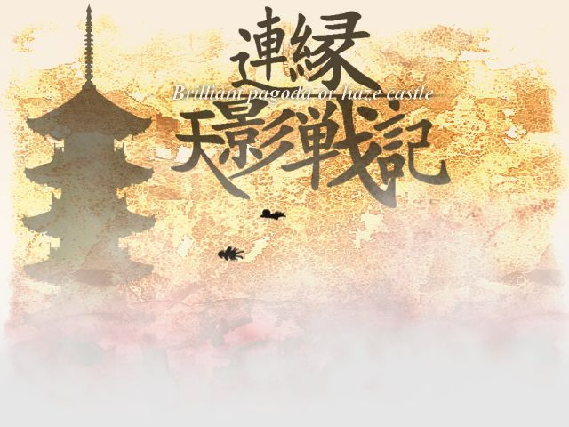
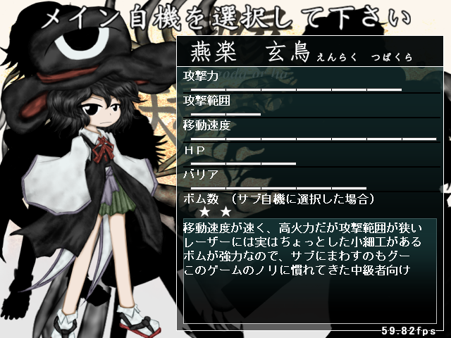

Len'En Brilliant Pagoda or Haze Castle ("Брилиантовая Пагода или Туманный Замок") - четвёртая и самая большая игра в серии, вышедшая 1 декабря 2016 года.
В игре присутствует 4 сложности: Лёгкая, Нормальная, Сложная, Нереальная. В этот раз дополнительный уровень имеет только 2: Обычная и Абсурдная.
Игроку даётся 2 играбельных персонажа на выбор, но в самом начале игры доступен только один. Для открытия второго нужно полностью пройти игру за первого персонажа на любой сложности, а также дополнительный уровень.
Игра за каждого из персонажей рассказывает один и тот же сюжет, но с разных точек зрения.
В игре также присутствует секретный персонаж, который открывается при 100% прохождении за первых двух, и был добавлен после выхода 4-ой игры серии.

Первая игра в серии является завязкой для всех последующих игр. Группа людей внезапно попадает в другой мир - Мугенри, и их общая подруга - Ябусамэ Холен - отправляется их искать. По пути она встречает каждого из них и понемногу узнаёт причину, по которой они все здесь оказались. В конце пути она встречает виновника торжества - Цурубами Сенри. Он раскрывает свои планы: он хотел устроить состязание между этими людьми на пост священника храма, так как он, нынешний священник, хочет отправиться в отпуск. По итогам состязания Цурубами выбрал на своё пост двух людей: саму Ябусамэ, и другого главного героя - Цубакуру Энраку, который добрался до священника раньше неё.
История секретного играбельного персонажа - Сузуми Кузу - является пересказом сюжета выше, так как он, как подразумевается, "перечитывает" события из прошлого в настоящем, то есть после событий 4-ой части.